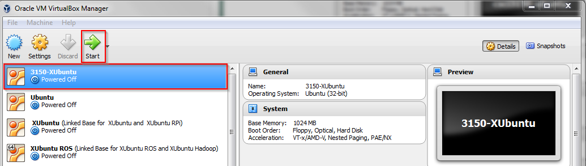
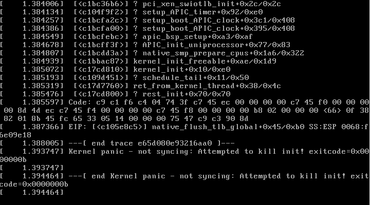

Power up the machine
Select the VM, click "Start", and a new window pops out which shows the console of the VM. Please note that your virtual machine is 3102_XUbuntu, which is not exactly same as the picture
If the kernel panic like the picture below when you power up the machine, you should know that the cause of this problem is that your laptop does not have virtualization technology turned on. So just turning it on is OK. You may refer to following solution:
(1) Reboot your laptop and enter the BIOS. Different laptops has different methods to enter the BIOS. For most cases, you can keep pressing ESC key when rebooting and you may see the BIOS MENU. Enter the corresponding key(e.g. F10) shown on MENU to enter the BIOS SETUP UTILITY. Please note that this method may not work on your laptop, so you may search your own methods to enter the BIOS.
(2) In BIOS SETUP UTILITY, select the Configuration option and you will see the Virtualization Technology. Enable it by pressing the Enter key.
(3) Save and Exit.
